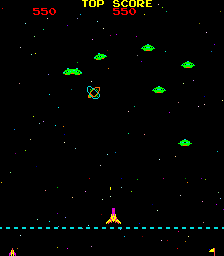

Jeu d'Arcade Battle Space
Ce projet est un jeu d'arcade spatial, développé en 5 jours en duo, dans le cadre d'un défi des études. Codé en C/C++, il s'inspire des classiques du genre en ajoutant des mécaniques dynamiques et stratégiques.
Le joueur contrôle un vaisseau spatial, affrontant un nombre d'ennemis variable qui attaquent en vagues. Les projectiles ennemis doivent être esquivés, et leur fréquence et direction changent en fonction des niveaux.
Le jeu comprend une barre de vie qui diminue lorsqu'on est touché, ainsi que des bonus à récupérer pour restaurer de la vie ou améliorer les capacités du vaisseau.
Une particularité du jeu est que les types de tirs du vaisseau évoluent en fonction des touches utilisées, ajoutant une profondeur stratégique aux affrontements.